Recap #1
Act 1: The Note Desolation Plays
Act 2: Raise of the Conductor’s Baton
Recap #1
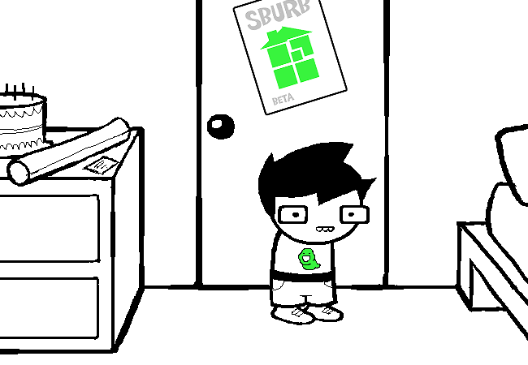
Act 1: The Note Desolation Plays
Recap #1
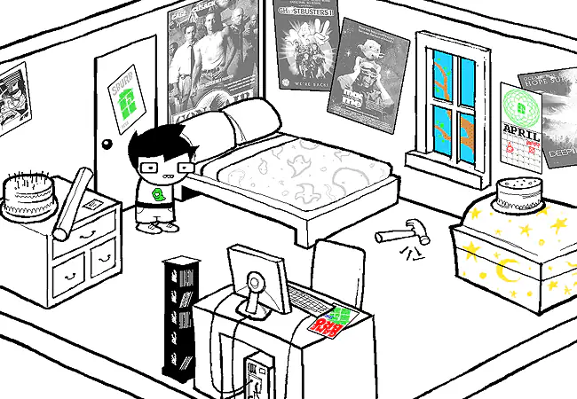
Homestuck begins with JOHN EGBERT, a thirteen-year-old boy standing in his bedroom on his birthday. He likes terrible movies, amateur magic, paranormal nonsense, and computer programming he is not very good at.
Before he can do much of anything, he has to wrestle with his SYLLADEX, an inventory system that stores objects on cards and makes getting them back unnecessarily difficult. His online friends keep interrupting.
Recap #1
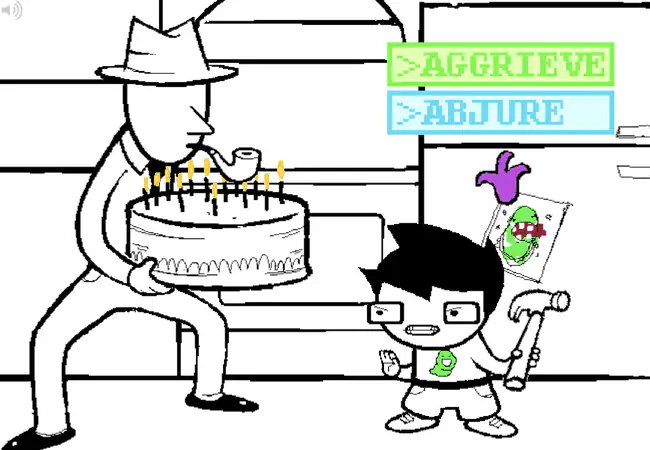
John is waiting for the beta of a computer game called SBURB to arrive in the mail. Unfortunately, DAD has already brought the mail inside. Retrieving it means braving the kitchen and surviving a messy fight involving hammers, cakes, and pies.
Recap #1
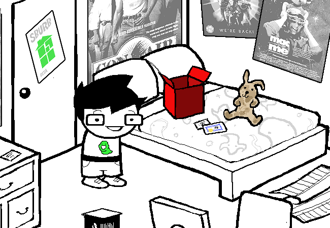
One package, a birthday gift from turntechGodhead (TG), contains the stuffed bunny prop from Con Air. Another contains the Sburb beta. Two more parcels remain inconveniently locked in DAD’s car, including John’s copy of the SERVER software.
Recap #1
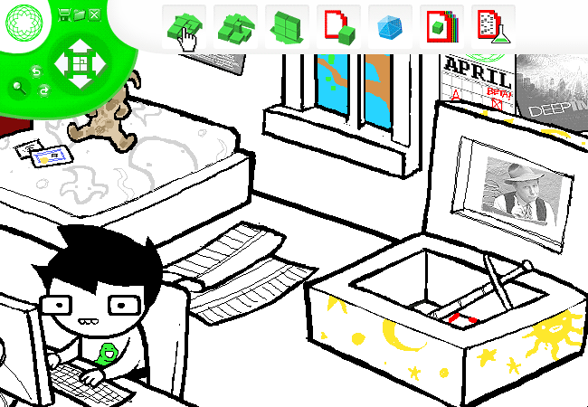
John installs Sburb and connects with tentacleTherapist (TT) as his server player. Through the server interface, TT can manipulate John’s house like a game board: moving furniture, modifying rooms, and deploying a collection of increasingly suspicious machinery.
Recap #1
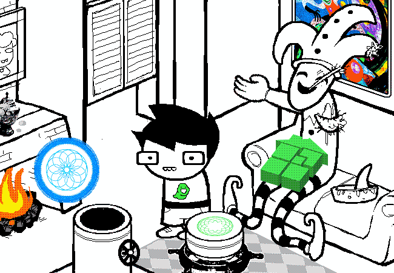
The machines turn patterns on punched cards into physical objects. Opening one of them starts a countdown and releases a glowing KERNELSPRITE.
TT follows the instructions to “prototype” the sprite by dropping John’s maimed harlequin doll into it. The sprite takes on the doll’s features, becoming a one-eyed, one-armed jester.
Recap #1
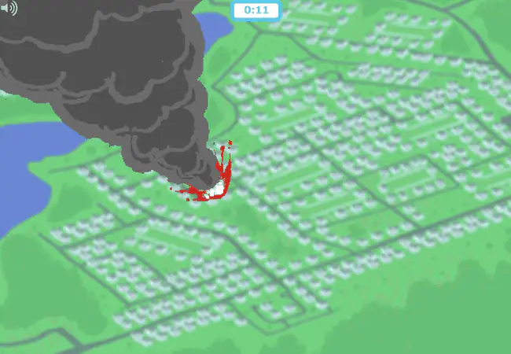
The countdown marks the time until a meteor strikes John’s house. Figuring out Sburb has become a matter of survival.
He and TT race to use the machines to make the object specified by the game’s punched card. John carves the pattern into a strange totem, while TT’s internet connection repeatedly fails.
Recap #1
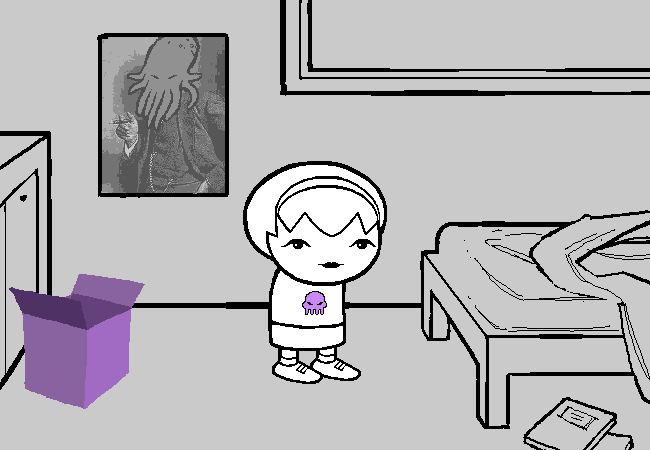
The perspective finally switches to TT in person: ROSE LALONDE, John’s friend on the opposite side of the country.
Her house has lost power in a violent storm, severing her connection at the worst possible moment. Rose carries her laptop up to the observatory and reconnects through an unsecured wireless signal coming from a mysterious laboratory nearby.
Recap #1
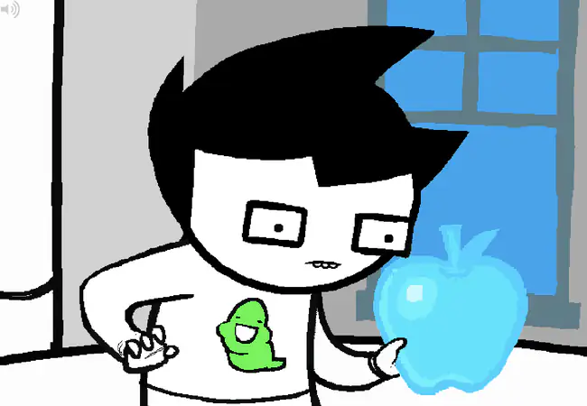
Rose reconnects just in time. John uses the carved totem to make a blue apple. With seconds left on the countdown, he takes a bite. John’s entire house vanishes a moment before the meteor obliterates the neighborhood.
END OF ACT 1.
Recap #1
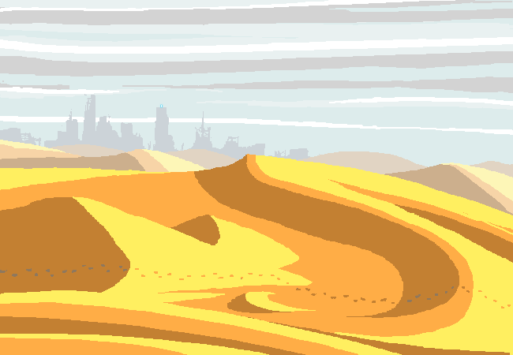
Act 2: Raise of the Conductor’s Baton
Recap #1
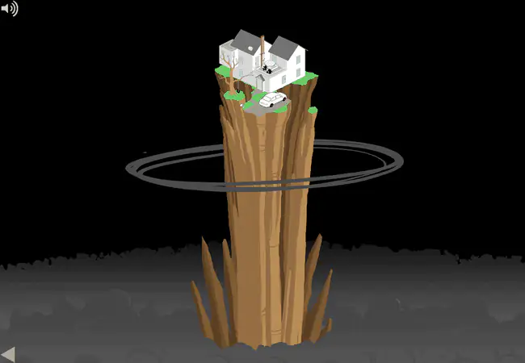
John and his house have escaped into a strange realm called the MEDIUM. The house now sits atop a towering column above a blanket of clouds, with the clown-like sprite still following him around.
John has survived the meteor, but he has no idea what this place is or where Dad has gone.
Recap #1
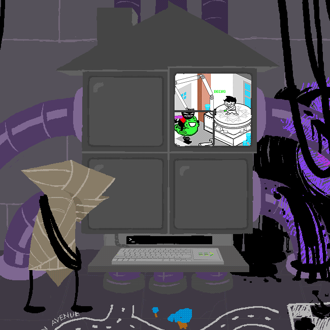
A mysterious voice begins issuing commands directly into John’s head. It belongs to the WAYWARD VAGABOND, a black-shelled wanderer living years in the future.
WV has found a strange underground station whose terminal displays John like the protagonist of a text adventure. Its keyboard lets him submit commands.
Recap #1
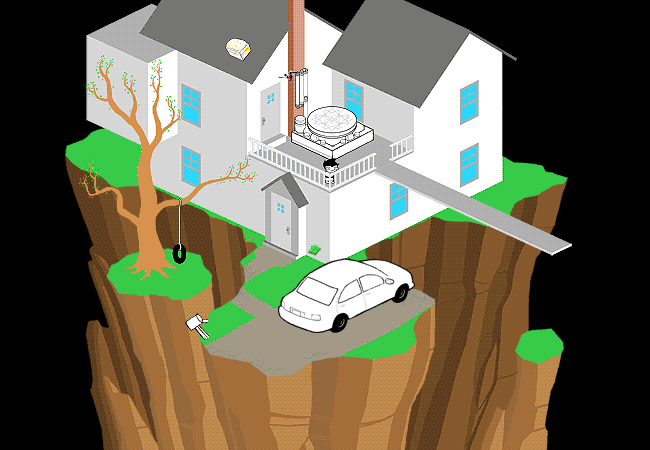
To help Rose in return, John needs the Sburb server disc still locked in Dad’s car. Rose tries to lift the car back up to the house, but her laptop dies halfway through. The car, the disc, and John’s remaining birthday packages plummet into the abyss.
Recap #1
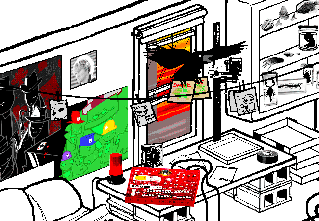
With John’s server disc gone, he asks TG to connect to Rose instead. TG is finally introduced in person as DAVE STRIDER, an impossibly cool thirteen-year-old in an apartment full of swords, turntables, and deeply troubling puppets.
His own Sburb discs are promptly stolen by a rambunctious crow, which Dave impales with a sword and accidentally launches out the window with the discs still attached. He now needs copies from his older brother, BRO.
Recap #1
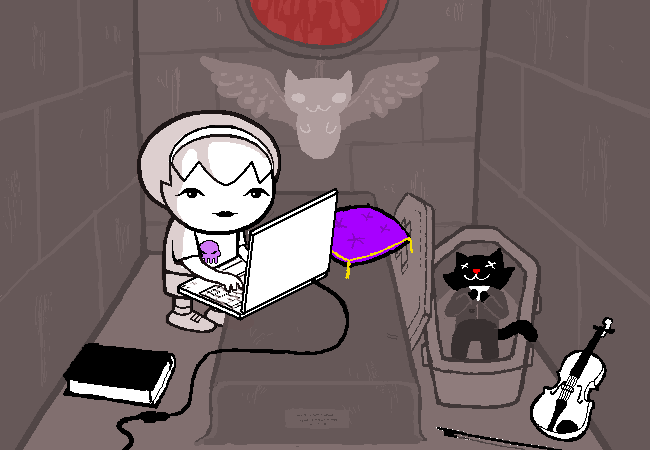
While Dave searches for the game, Rose is running out of time. Meteors are falling around her home, and the surrounding forest is on fire.
After a fight with MOM, she heads through the rain to the mausoleum of her dead cat JASPERS. A portable generator there lets her power up her laptop and reconnect to John.
Recap #1
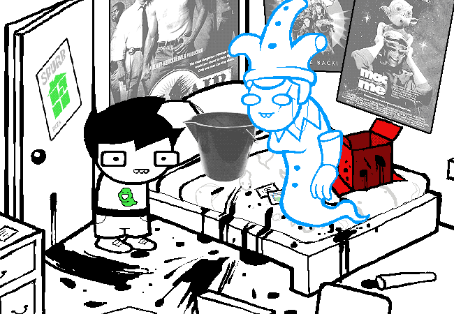
Back at John’s house, the sprite has accidentally absorbed his grandmother’s ashes. This second prototyping turns it into NANNASPRITE, complete with Nanna’s personality, memories, and alarming enthusiasm for baked goods.
At last, John has someone who seems to know what the hell this game actually is.
Recap #1
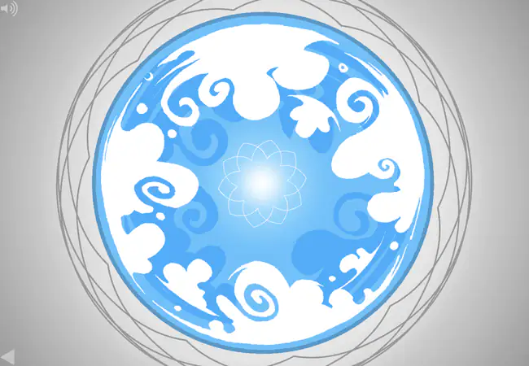
Nannasprite brings bad news: Dad has been kidnapped by the forces of darkness, and escaping the meteor has not saved Earth. She says the planet is doomed, but John’s quest has a larger purpose she refuses to explain.
At the center of the game’s cosmos lies SKAIA, where light and darkness fight a war the light side is destined to lose. John must travel through seven gates toward it to solve the ULTIMATE RIDDLE.
Recap #1
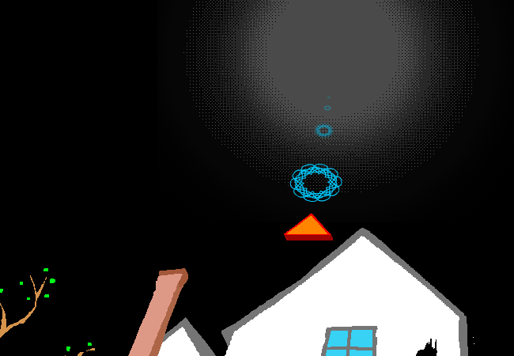
For John, the immediate goal is simpler: reach the FIRST GATE and find Dad. Rose has to build his house upward to get him there.
Meanwhile, harlequin-costumed IMPS swarm the house. Defeating them yields GRIST, the material Rose needs for construction and John needs to make new equipment.
Recap #1
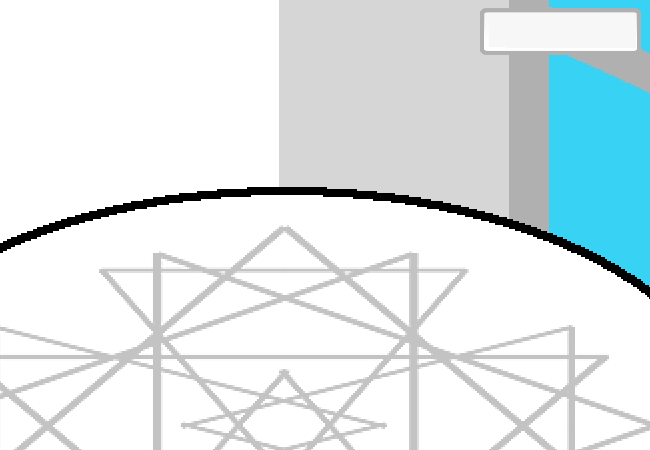
The machines that saved John can also help him fight back. The ALCHEMITER uses grist to make objects from the codes on his inventory cards.
Better yet, combining two codes can create something new. John combines his claw hammer with the Green Slime Ghost pogo ride to make the POGO HAMMER.
Recap #1
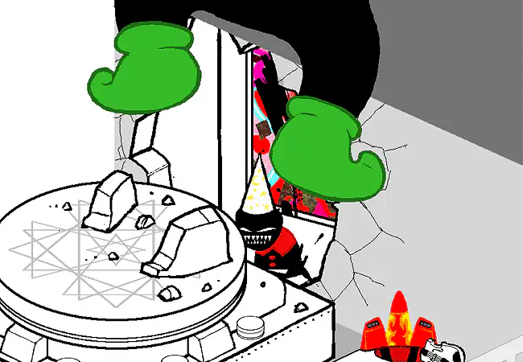
The new weapon arrives just in time. Two CRUDE OGRES begin climbing toward the house, and the forest fire finally overwhelms Rose’s generator, cutting her connection again. John heads for the highest point of the house to face the much larger underlings alone.
Recap #1
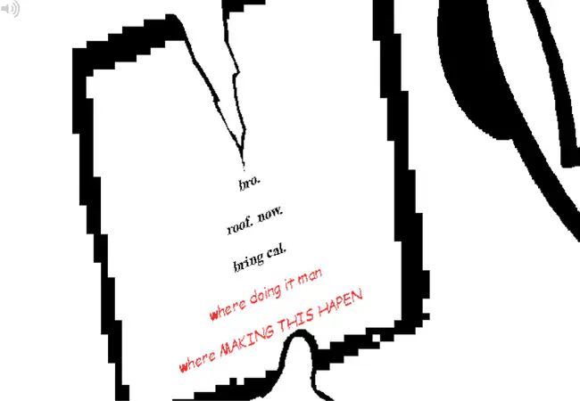
Dave, meanwhile, searches BRO’s apartment for the missing Sburb copies, navigating a gauntlet of swords, smuppets, Bro’s ventriloquist doll LIL CAL, and layer upon layer of weaponized irony. He finds no game. He does, however, find a note summoning him to the roof. Dave arms himself accordingly.
Recap #1
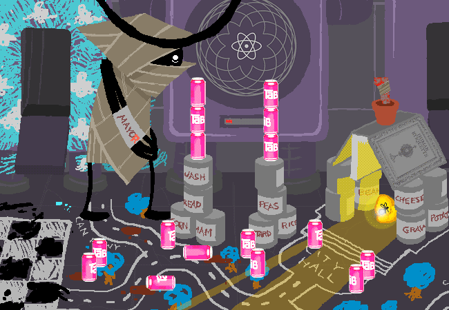
Years in the future, WV has more immediate concerns. He finds a pantry full of canned food but no can opener, establishes the thriving democracy of CAN TOWN, and consumes several things no reasonable creature should eat, including a chunk of uranium.
Recap #1
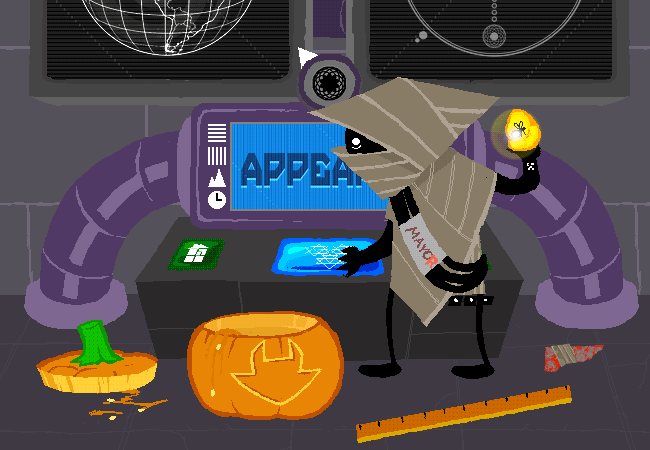
After locking himself out of John’s terminal, WV discovers an APPEARIFIER, a machine that can retrieve objects from elsewhere in space and time, so long as doing so would not create a paradox.
He uses it to free a firefly named SERENITY from a block of amber. Another mysterious countdown is almost finished, so the two make a break for the exit.
Recap #1
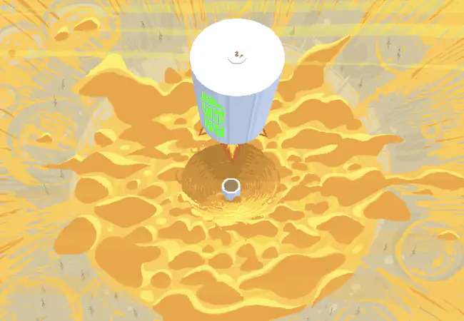
Act 2 closes with a FIVE TIMES CLIFFHANGER COMBO: WV’s command station blasts out of the ground and flies west, a white-shelled PEREGRINE MENDICANT discovers another station, MOM opens a secret passage beneath Jaspers’s mausoleum, DAD escapes his imp captors, and Dave meets BRO on the rooftop.
WV finally lands beside a set of mysterious frog ruins.
END OF ACT 2.